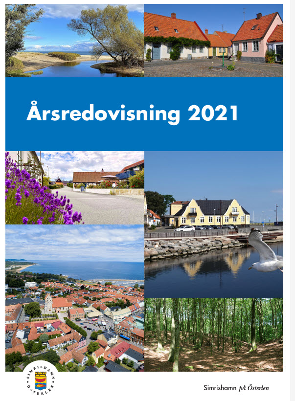
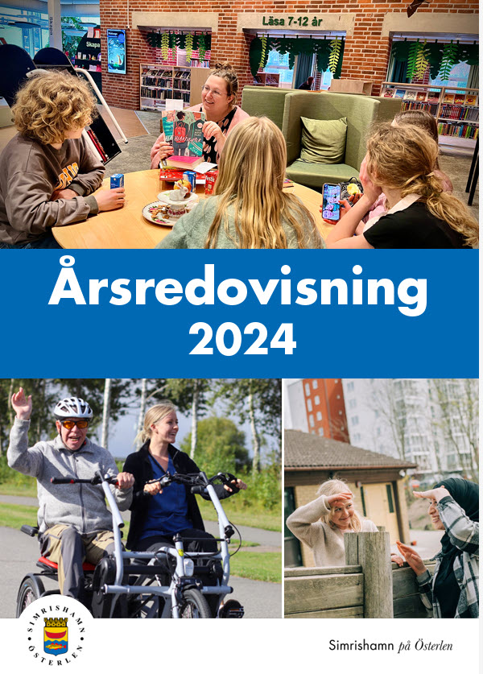

Quiz: Årsbokslut och Årsredovisning
En guide för kommunalt anställda i Simrishamn
Sida 1 av 5
En guide för kommunalt anställda i Simrishamn


Nu är du redo! Testa dina kunskaper om årsbokslut och årsredovisning! 🎯
Filstruktur: Detta quiz är byggt med separation of concerns-principen, där HTML, CSS och JavaScript är uppdelade i separata filer:
Att dela upp kod i separata filer ger flera fördelar:
Skapad: 2025-11-20 med AI-assistans (Claude 4.5 Sonnet)
Baserad på: Blogg om årsbokslut och årsredovisning samt instruktioner från Simrishamns kommun
Skapad 2025-11-20: Nytt quiz om årsbokslut och årsredovisning med fokus på viktiga datum, periodisering, verksamhetsberättelser och skillnader mellan begreppen. Programmet återanvänder samma teknik som tidigare quiz med separata filer för HTML, CSS och JavaScript.
Quiz: Årsbokslut och Årsredovisning - En guide för kommunalt anställda
Frågor och fördjupade förklaringar baserade på (i Harvard-format):
Detta quiz är skapat för att hjälpa kommunalt anställda i Simrishamn att förstå årsbokslutsprocessen och årsredovisningens struktur. Materialet baseras på officiella instruktioner och den kommunala redovisningslagen.
För fullständig information om årsbokslut och årsredovisning i din kommun, kontakta din ekonomifunktion eller controller.
Läs mer på bloggen: Årsbokslut och årsredovisning: En guide